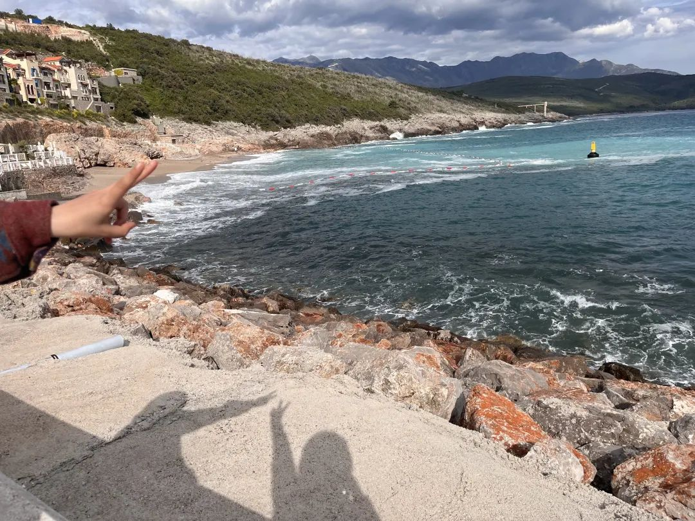
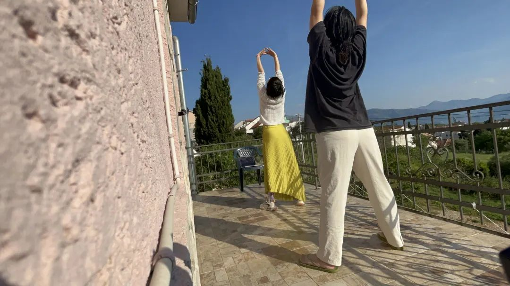

NO.2
Jun.
Zuzalu是以太坊联合创始人Vitalik于2023年3月-5月在黑山发起的pop-up city（快闪城市）实验。在两个月的时间内，这个实验吸引了200名来自全球各地居民（包括访客将达到700人）参与，而我则在4月份成为了这座“城市”的访客，并在这里度过了一个月的时光。在Zuzalu，我参与最多的是网络国家（Network State）与AI相关的活动，由此结识了不少好友；我还与SeeDAO的其他两位成员在黑山度过了一段“Chinese Longevity（长生）”的“修仙生活”，并在Zuzalu开设了太极课程，吸引了不少欧美的朋友参与。
唐晗
文/唐晗
歪脖三观顾问团成员，SeeDAO 发起人
“为学日益，为道日损。损之又损，以至于无为。无为而无不为。取天下常以无事，及其有事，不足以取天下。”
——《道德经》
01
我最近一直在思考Zuzalu与我之前所参与的社会实践之间的区别（尤其是co-living社区），以及为什么Zuzalu产生了如此多的涌现（秩序的涌现、意义的涌现、创造的涌现）。
通过一段时间的思考，我尝试描述出我所感受到的Zuzalu实验的特征。
首先，实验规模和时间很有意思：200人/2个月。城市并非太小，以至于无法形成规模；也并非太大，以至于共识分散且难以治理。2个月的时间类似于一个暑假的时间，既不是很短显得像是来度假，也不至于很长变成了长时间的居民。
其次，地点选择在了文明的飞地上。黑山位于欧洲的旁边，但又不属于欧盟。黑山是前南斯拉夫解体国家，前社会主义国家，但人口又不到百万。这里可以看到各种文明留下的痕迹，因而在这种语境下讨论文明具备可行性和想象力；但又不处于文明的核心圈内，以至于被秩序压抑。这与在北京、上海、伦敦等地方的co-living空间非常不同，那里只能服从或融入既有秩序；解除秩序压抑带来了探索新秩序的可能性。
其三，通过主题来筛选参与实验的人群，以某种方式达到了“价值观对齐（Value-alignment）”。在黑山的人非常多元，包括学者、企业家、学生等，但大致上大家的氛围感觉（vibe）还是非常契合的，因为很多人是由于对某个主题感兴趣而来的（对Longevity、AI和Crypto感兴趣的人基本都很开放，愿意探索一种新的世界秩序）。
同时，飞地起到了门槛筛选的作用。大量的商业项目广泛聚集在文明中心城市，要他们放下2个月的时间成本，来到一个飞地，很多人会不愿意。没有价值观对齐（Value-alignment），不可能有和谐的涌现，治理成本也会变得极高（EDCON前后的Zuzalu就出现了一些问题）。
其四，赋予参与实验者新的身份，削弱他们在原本秩序下的身份差异与对立。实验者几乎没有来自黑山当地的，而是来自世界不同国家，因而在黑山他们都没有强大的当地势力，一切都需要重新开始。在新的环境中，他们被赋予了在地的新身份：Zuzalu居民，或者Zuzalu访客。Zuzalu成为了他们在黑山的共同体，在建设这个共同体面前他们是平等的。
这削弱（还没有到取消的地步）了他们原本的身份差异（中国人、美国人、企业家、学生、贫富差距等），使他们具备了因原有秩序束缚而无法涌现的基础。对于削弱民族国家身份这件事是我最感兴趣的。我们很难在美国、英国和俄罗斯去组织这种讨论，因为在那里民族国家身份的对立性非常明显，很难摆脱这种束缚。
最后，高度的自由。在自由及秩序涌现上，Zuzalu令我印象深刻。我记得最开始邀请Balaji（Coinbase前首席技术官，Network State 概念首倡者）分享Network State的时候，几乎每个人都还需要引用Balaji的话来讨论Network State；但随着大家讨论越来越深入，开始有人表达对这样的Network State的不满。而随着Primavera（法国理论家，哈佛大学区块链学者）来到Zuzalu，紧接着大家又开起来抨击Balaji，讨论“组织协调（Coordination）”的工作坊，甚至形成了一个松散的联盟。
Longevity（长生）也是如此，虽然Zuzalu聚集着一群Longivity 极大主义者，但这并不妨碍另一群人组织起来了反Longevity的小组，大家一起尽情享受高甜度食物；也不妨碍Chinese Longevity派别的发展。Zuzalu并没有那种强烈的政治正确，它不预设立场，允许人们自由辩论、结社、反对、建设，最终让Zuzalu呈现出某种模样。
图片来源：唐晗
从结果上看，Zuzalu有一个非常戏剧性的结果：我知道不少来到Zuzalu的年轻人，当这个实验还没有结束的时候就选择了辞职；或者，当他们回到原来的生活后，他们在准备辞职。
我的理解是：Zuzalu提供了一个让他们摆脱原有秩序束缚的场所，让他们能够更清楚地思考自己以及自己所应该为之贡献的集体。（每个人内在都有一个“道”存在，只是在现有秩序下被压抑了。当一个人从原本压抑的环境中解脱出来的时候，那种“道”会自然而然地展开，他们得以重新思考自己的道路。）
许多人对Zuzalu有自己念念不忘的地方，例如一起吃早餐，一起辩论，晚上一起开party，又或者是读书会等。有些人在Zuzalu感受到了一种家的感觉，或是一种共同体。我认为这些只是解开秩序压抑束缚后的人们，在Lustica Bay（位于黑山的一个综合性度假社区和旅游目的地）当地的自然环境自然展开的结果。
当然，如果改变了Zuzalu所在地方的自然条件，“展开”的形式可能会有一些不同，但结果都是好的。例如，我们取消了kiki聚餐（当地的一个餐厅，大家经常去那儿吃早饭），而是提供一个公共做早餐的地方；同时我们把实验地点改到了山上，大家可以自己去采摘食物，表现出的形式可能会有所不同，但也能看到人的涌现。

图片来源：唐晗
我想要补充为什么解开秩序束缚很重要。当我们在讨论Network States的时候（姑且还是用Balaji发明的这个词吧），我们就已经在表达对现有秩序的不满了。总体来说，我们处于一种对抗的世界中。二战是法西斯与反法西斯的战争；二战后是社会主义和资本主义阵营的战争；苏联解体后，美国虽然成为了世界的领袖，但又有了“民主国家”与“非民主国家”的战争；中国崛起后，东方和西方又成为了敌人。
我们要么就是A，要么就是B，总之就得选边站。而A和B总是构成了一种潜在的敌对关系。民族国家就是一种典型的叙事：我要么就是美国人，要么就是俄国人，而美国和俄国构成了一种微妙的敌对关系。既然我是俄国人，那么我就得争取俄国的利益，而不关心美国人的死活。我们忠诚于一个局部概念而不是整体概念，忠诚于民族国家而不是人性。
不管世界是不是和平，我们总是在制造并寻找敌人。这种秩序已经到了很危险的时刻，又与技术奇点汇合，我们的眼前终于看到了一种不可接受的结局：走向集体毁灭的结局。
脱离A和B的身份限制，重新回归到“人”，是我在Zuzalu身上看到的一种可能性。在Zuzalu，身份不是被强制赋予的，而是可以通过自己的行为来自我定义和选择的。
至于早餐、Party、Hiking（徒步）等等，在我看来是解除了A和B的身份限制后，大家自然衍生出来的行为选择。当我们回归到“人”而不是被印在身上的符号束缚时，自然而然会在生活中做出选择，回归到每个人自己的“道”，即“自由”中，并衍生出一种秩序。从这个角度，Zuzalu的实验是成功的。

图片来源：唐晗
好的文明应该让人过忠于自己内心的生活，而不是沦为秩序机器的螺丝钉。
02
Zuzalu可能出现一些变体。
我相信，当实验的人数、时间、地点、主题进行调整的时候，Zuzalu都会呈现出不同的样貌。但削弱实验者旧有的身份秩序，赋予他们新的身份（实验中大家平等交流的基础），并且给予大家高度的自由，这似乎是不可调整的。一旦没有了这些东西，我很难想象它还是Zuzalu。
可以想象当Zuzalu的实验地点从黑山转到清迈后会发生怎样的变化：更多的人（可能会突破200人上限）；更多的亚洲面孔；更高的可持续性；更复杂的治理问题。更像一个真正的城市。
也可以想象当Zuzalu的实验地点从黑山转到帕劳、土耳其的卡什、葡萄牙的里斯本、印尼的巴厘岛后可能发生的变化。虽然地方、规模、实验时间会发生变化，但还是会有一种活的东西让人意识到，这还是Zuzalu。人们也可能在不同的Zuzalu中游走，通过人的连接实现价值观对齐（Value-alignment）。
一
作为稷下学宫的Zuzalu
在Zuzalu的这些时间，经常会让我想起战国时期的稷下学宫（很多人称Zuzalu为雅典学院，但从大的环境下看，可能更类似于稷下学宫）。Zuzalu以上的五点，确实可能导致“稷下学宫”的产生。
去年，当Tony踏上了数字游民之路的时候，我和他谈论到现在的世界形势，他提到现在的世界很像春秋战国。礼崩乐坏，旧有的道德观坍塌，无穷的战争，人们沦为战争的机器。在那样大的危机下，一大群博学且对天下负有责任感的人，都在讨论新的世界秩序，构建新的理论并展开实践。那时候，真正好的学者都不属于某一个国家（例如，楚国）。他们是游民哲学家。
孔子是一个典型的游民哲学家，他是鲁国人，带着他的学生周游列国，传播他的学说；
老子原来是周王朝的图书管理员，后来出函谷关，写了道德经；
墨子提倡兼爱非攻，带领着他的学生在各国之间阻止战争，甚至直接帮助被攻占的小国抵抗外国的入侵。
没有专门为一个国家服务的哲学家，所有的哲学家都在思考新的世界秩序和构建的可能，并且还在采取行动，直接去实验和构建他们想要的秩序。他们选择留在某个国家，是因为这个国家采取了他们想要的秩序或提倡的学说。例如，黑山政府采取对Longevity或者crypto友好的政策，因而一些人会想因此留下。
这些游民哲学家直接影响了礼崩乐坏后的世界秩序。事实上，后面的世界秩序正是在游民哲学家们的激辩和实验中诞生的。
我认为在在我们这个时代应该出现游民哲学家。只有游民哲学家才真正知道世界在发生什么，并且能从民族国家的压抑中解放出来，思考未来的世界秩序。只是待在中国、美国或者欧洲的学者，或者只是服务于某一个国家的学者是不可能提出一个新的世界秩序的。因为一个国家的利益立场，不可能与整个世界的利益立场相一致。而要获得整个世界的利益立场，他必须是一个游民，他必须体验这个崩坏的世界。
此外，很多真正的学者因为现实情形而痛苦。因为他们服务于民族国家体系下的学术网络，他们的经济来源直接来自民族国家或者大公司，所以他们不得不屈服于现实秩序来进行研究。在中国，已经很难看到超出中国思考世界秩序的哲学家了；美国也一样，政治正确及对中国的猜忌也损害了自己的学术网络。
回到中国后，我与一位SeeDAO成员，同时也是中国Top2高校的一名教授在北京见面。他提到如今的教授职称于他而言已是一种枷锁，并提到了放弃教职，成为一个游民哲学家的可能期待。这并不是个例。
游民哲学家需要有一个聚集地。我在Zuzalu看到了游民哲学家聚集的可能。Zuzalu的价值观对齐（Value-alignment）一旦变成主题性质的，最有可能形成的就是一张学术的网络。飞地将释放这些哲学家思考和辩论的潜能，让他们快速组合。
此外，这些游民哲学家自带社区（就像孔子和墨子身边自然围着一群人），他们的社区具备行动能力（程序员、艺术家、设计师等），他们可以以Zuzalu为实验基地，并建设这个实验基地。因而，Zuzalu也会变成一个生活的社区，但生活在稷下学宫并不是第一位置的，第一位置的是思想。
图片来源：唐晗
这是一件现实的事情。稷下学宫模式下的Zuzalu最重要的是飞地下的自由；它并不是一张富人的网络，却可能成为一张思想精英的网络，或者说一个“士”的网络。（“士”在中国并不是一个坏词，并不等同于西方语境下的“精英”。“士”是思想上有追求，并且以天下——世界秩序——为己任的人，应该受到社会的尊重。在中国的地位中，“士农工商”，有钱的商人排列在最后的位置。）
二
作为游民根据地的Zuzalu
在民族国家秩序崩溃的时代，游民会成为一股趋势。我认为最终一定会有数字游民的根据地。这些根据地也将建立在民族国家秩序的边缘地带，例如土耳其、泰国、乌拉圭等地方。在那些地方，数字游民已经开始聚集，并且已经有它的文化和历史。（中国游民向泰国迁徙的历史，已经超过一百年了。）
在这些地方，由于游民的体量已经如此之大，可能建立新的学校、医院，以及公共基础设施。（我注意到，这次来Zuzalu实验的，几乎没有带着孩子来的，所以这并不是真正的人类社会。）这里也可能形成新的社会规则和治理体制。
与“稷下学宫”不同的是，游民根据地不需要有特殊的“话题（topic）”，只是对居民会有价值观对齐（Value-alignment）的规约（可能是区别于topic限制的value-alignment）。生活本身是游民根据地最大的特色和诉求。同时，需要有愿意长期运营这个地方且可靠的人来经营根据地。人选和治理规则将是重要的。
由于根据地的实验人数会更多（也许，2000人？），时间会更长（假设时间是3年，或者永远？），它一定会影响到本地生态，和在地的关系将不得不成为重要的考量。从天而降的大量的外地人口、资金、对资源的需求、观点将让根据地成为当地的重要势力，从而可能产生纷争和不满。
例如，聚集在巴厘岛的俄罗斯游民因为囤积土地，炒高了当地的地价而引发了不满；再例如，不同文明的人希望到一个地方后延续之前的文化，因此会开设各种各样的国际学校，与在地的教育体系脱节，引发当地政府的重视等。
根据地的经济可持续问题将变得非常突出。如此多的数字游民聚集在这里，大家依靠什么来生活？（或许对Web3从业人士还好，因为很多已经是游民模式了，不依赖本地经济生活。）补贴和捐赠必然不是出路。在这里，需要更多的观察和实验。
03
我仍然很难界定“Zuzalu”是什么。但只要它变成了一种可以尝试的实践，这种实践就不会只被规定在一个工作组内。
“Zuzalu”或许已经有了一个自己的核心工作小组，但它的经验会被其他组织或者社会实践者学习，从而成为一种“模式”。很难说这些学习“Zuzalu”经验而构建的社区，是不是也是“Zuzalu”，或者是别的什么东西。但它们一定会存在。
我认为Zuzalu将变成“满天星斗”。可能核心工作小组会维持一个官方的Zuzalu（例如今年上半年在黑山，下半年在清迈），也可能不会；但世界的不同角落，也会有很多类似于Zuzalu的实验在同步进行。Zuzalu的居民和访客们将不受控制自发去进行这些实验，因为许多人已经觉醒出这样的意识，想要去探索一种民族国家体系外的新秩序。因此，思考“Zuzalu”们之间的关系可能会成为接下来的一个话题。
一个收录Zuzalu经验的网站或论坛，将是一个必需品，供大家发布自己在不同地方的实验，并交流经验。鼓励居民在不同Zuzalu之间流动，也将变成一种对价值观对齐（Value-alignment）的切实可行之方式，因为他们知道这个Value的度在什么地方。
我一直期待Zuzalu可以拥有自己的“宪法（constitution）”，或者一本建立新的Zuzalu的指导手册。现在看来，一次实验或许还无法建立起这些机制，也不足以形成一本切实可行的指导手册。那么，建立一个泛Zuzalu交流网络，或许能促进这本指导手册更快推出。大家也能自行去讨论不同Zuzalu之间的秩序是什么。
04
我认为最终得出的建立Zuzalu的指导手册将是十分重要的。
黑山之后，我回到了中国。中国的历史是十分有趣的。现代中国与古代中国的差距，或许是现代中国与现代美国差距的1000倍。老子在《道德经》中所说的自由，不是西方社会中给你选择然后让你选择的自由，那种自由其实已经在事物和人内在之中。不幸的是，现代中国，如今既失去了《道德经》里的自由，也失去了西方所说的自由。
我回到中国后，从东北一直穿越到了蒙古草原。在漫长的历史中，中国的北方一直是少数民族统治的疆域，与中国的汉族不属于同一个民族。但我穿越中国的北方，发现每当这些少数民族以强大的军事武力占领地理上的中国的时候，总是会遵从“华夏”的文化秩序，成为“天下”的统治者。
这是因为，“中华”不是一个国家，而是一种价值观对齐（Value-alignment）。在中华看来，没有人是生下来而成为华人的。当你出生在中国，而长大在另一种文化背景中，不认同中华文化的时候，你就成为了“夷狄”（夷狄描述的是远离中华文明的状态）。而一个人，即便是生于美国，当他认同中华文化时，他就变成了中国人。（按照这种观点，这个人可能比那些一味追求GDP的中国人都要中国人。）基于血统的民族国家在华夏背景下完全不可理解且不可理喻，因为汉族本身就是许多个民族，因为认同一个文化概念而不断融合形成的群体。
华夏不是一个地理概念，也不是一个民族概念，而是一个文明或者文化概念。或者说，它本身就是一个价值观对齐（Value-alignment）系统。《礼记》是华夏最著名的建国手册之一，但《礼记》与宗教无关。凡是依照《礼记》建立的国家，都兼容于华夏系统，自己就会在“组织协调（coordination）”之内了。
当然，2000多年前的《礼记》，于现在的全球社会早已不合时宜了。但是，这种构建世界秩序的想法，却并没有太大的区别。当蒙古人或者满人占领了地理上的中国，他们依然按照《礼记》来构建国家，他们变成了华夏的一部分，并获得了文化上的正统性。
难得的是，华夏的价值观对齐（Value-alignment）并不表现为一种强烈的侵占性。礼不往教。由于不是一个宗教系统，所以不去传播或者强制执行。喜欢这个礼的才采纳。它不是基督教、伊斯兰教、佛教，也不是美国想要推广的自由和民主。
在我们看来，需要靠战争去传播的真理不是真理。礼没有敌人，也没有它要去解救的人，而是一种你想认同就属于某个共同体的“价值观对齐（Value-alignment）”。当你不认同的时候，你就不在此秩序之内；但不在此秩序之内，也不意味着你需要被打击，或者要被强迫纳入此秩序。
我还没有看到多个地方的Zuzalu是如何连成一张网络的。但我似乎能看到遥远的“华夏”系统与现在Zuzalu已经呈现出来的一些气质的相似性。
声明：我们欢迎任何机构转载文章，转载时请务必保留作者、作者介绍、歪脖三观介绍。转载请联系：tiaodengzhiye1（微信ID）。
热
往期精彩文章
HOT！